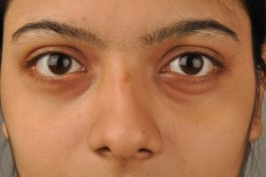

မ်က္ တြင္း က်ျခင္း

၁။ အာလူးကုိ ပါးပါးလွီးၿပီး မ်က္ လုံး ေပၚတင္ ထား ေပးပါ။ မိနစ္ ၂၀ခန္႔ ေလာက္ ဆုိ မ်က္ စိလည္း အေတာ္ ေလး အနားရ သြားပါၿပီ ။
၂။ ေရ ၈ဖန္ ခြက္ ကေန ၁၀ဖန္ ခြက္ အထိ ေန႔စဥ္ ပံုမွန္ေသာက္ ေပးပါက မ်က္တြင္း က်ျခင္း ကို ကာကြယ္ ႏိုင္ပါတယ္။
၃။ လက္ ဘက္ ေျခာက္ ထုပ္ ၂ထုပ္ ကို ေရ ေအးႏွင့္ မိနစ္ အနည္း ငယ္ စိမ္ ျပီး မ်က္ လံုး ေပၚတင္ ပါ။ ၁၅ မိနစ္ - မိနစ္၂၀ ေလာက္ တင္ ျပီး မ်က္ ႏွာကို ေရ ေအးျဖင့္ ေဆးပါ။
၄။ လတ္ ဆတ္ ေသာ သခြားသီးစိတ္ ၂ စိ္တ္ ကို မ်က္ လံုး ေပၚတင္ ပါ။ မိနစ္ ၂၀-၂၅ ေလာက္ ဆို ဖယ္ ျပီး ေရ ေဆးပါ။
၅။ ၾကက္ ဥအကာ ကလည္း မ်က္ တြင္း က်ျခင္း ကို ေလ်ာ့ပါး သက္ သာ ေစႏိုင္ ပါတယ္။ ၾကက္ ဥအကာကို မ်က္ လံုး ေပၚတြင္ ႏူးညံ့ ေသာ အဝတ္ ႏွင့္ လိမ္းပါ။ ေျခာက္ ေသြ႕တဲ့ အထိထား ျပီးမွ ေရ ေဆးပါ။
၆။ တစ္ ေန႔ကို အနည္း ဆံုး ၈ နာရီခန္႔ အိပ္ပါ။
နည္း လမ္း ၁၊ ၃၊ ၄ နဲ႔ ၅ ထဲက ႏွစ္ သက္ ရာနည္း လမ္း တစ္ မ်ိဳးကိုသာ သံုးပါ။